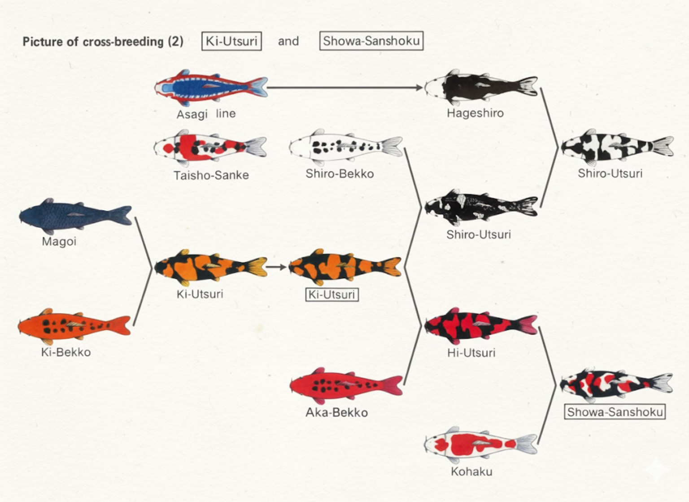

Modelo de Cruzamento Genético
Ilustração de Epistasia Recessiva na Cor de Carpas Koi (Modelo Educacional Simplificado)
| Gametas | CB | Cb | cB | cb |
|---|---|---|---|---|
| CB | CCBB → Preto | CCBb → Preto | CcBB → Preto | CcBb → Preto |
| Cb | CCBb → Preto | CCbb → Vermelho | CcBb → Preto | Ccbb → Vermelho |
| cB | CcBB → Preto | CcBb → Preto | ccBB → Branco | ccBb → Branco |
| cb | CcBb → Preto | Ccbb → Vermelho | ccBb → Branco | ccbb → Branco |
Legenda dos Genes (Modelo)
Gene C (Cor): Permite a produção de pigmento. O alelo recessivo 'cc' bloqueia a cor (epistasia), resultando em um peixe branco (albino).
Gene B (Pigmento): Define o tipo de cor. 'B' para pigmento preto (eumelanina) e 'b' para pigmento vermelho/amarelo (feomelanina).
Análise da Proporção Fenotípica (9:3:4)
9/16 Preto (56,25%)
Requer pelo menos um alelo 'C' e um alelo 'B'.
3/16 Vermelho (18,75%)
Requer pelo menos um alelo 'C' e dois alelos 'b'.
4/16 Branco (25,00%)
Ocorre com dois alelos 'c', independentemente do gene B.
Conclusão: A proporção 9:3:4 é a assinatura clássica da epistasia recessiva em um cruzamento diíbrido. A genética de cores em Koi é muito mais complexa, mas este modelo ilustra um princípio genético fundamental.
Linhagens de Criação de Koi
Exemplos de Cruzamentos para Obter Variedades Específicas
1. Magoi + Ki Bekko → Ki-Utsuri
Parentais: Magoi (carpa selvagem preta) e Ki Bekko (amarelo com manchas pretas).
Objetivo: Combinar o preto (sumi) forte da Magoi com a base amarela (ki) da Ki Bekko.
Resultado (F1): A primeira geração (F1) geralmente resulta em peixes escuros, pois o preto da Magoi é geneticamente dominante. A seleção cuidadosa dos descendentes é necessária para revelar o padrão desejado nas gerações seguintes.
2. Shiro Bekko + Ki-Utsuri → Shiro-Utsuri
Parentais: Shiro Bekko (branco com manchas pretas) e Ki-Utsuri (preto com manchas amarelas).
Objetivo: Produzir um Shiro-Utsuri, que tem um padrão de preto (sumi) sobre uma base branca (shiroji).
Resultado: Este cruzamento visa combinar a base branca da Shiro Bekko com o padrão de preto envolvente da Utsuri. A genética é complexa, e apenas uma fração dos descendentes exibirá as características desejadas de um Shiro-Utsuri de qualidade.
3. Hageshiro + Shiro-Utsuri → Shiro-Utsuri (Refinamento)
Parentais: Hageshiro (uma linhagem de Shiro-Utsuri com preto na cabeça e nadadeiras) e um Shiro-Utsuri de alta qualidade.
Objetivo: Refinar e estabilizar a qualidade do padrão sumi (preto) e a pureza do shiroji (branco) na linhagem de Shiro-Utsuri.
Resultado: Este é um cruzamento de aprimoramento (outcross), não para criar uma nova variedade, mas para melhorar as características de uma já existente, buscando um equilíbrio ideal entre preto e branco.
4. Ki-Utsuri + Aka Bekko → Hi-Utsuri
Parentais: Ki-Utsuri (preto e amarelo) e Aka Bekko (vermelho com manchas pretas).
Objetivo: Substituir a base amarela (ki) da Ki-Utsuri pela base vermelha (hi) da Aka Bekko para produzir um Hi-Utsuri (preto e vermelho).
Resultado: Este cruzamento é uma técnica para criar ou aprimorar a variedade Hi-Utsuri. O objetivo é combinar o padrão de preto (sumi) da linhagem Utsuri com uma cor vermelha (hi) vibrante, resultando em um peixe com base preta e marcações vermelhas.
5. Hi-Utsuri + Kohaku → Showa Sanshoku
Parentais: Hi-Utsuri (preto e vermelho) e Kohaku (branco e vermelho).
Objetivo: Combinar as três cores (preto, vermelho, branco) para produzir a variedade Showa Sanshoku.
Resultado: Este é um dos cruzamentos clássicos para a produção de Showa. O desafio é obter o padrão característico da Showa, onde o preto (sumi) se manifesta em faixas envolventes sobre o padrão vermelho e branco. A seleção rigorosa ao longo de várias gerações é crucial para o sucesso.
Fonte da Imagem
Disponível em: Google - Heredogramas de Koi